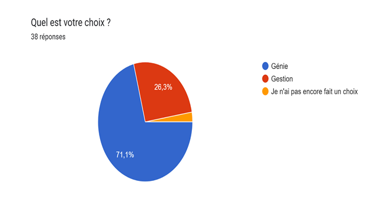

La population sur laquelle porte notre étude est celle des étudiants qui ont renseigné le questionnaire en ligne sur le choix de la filière génie ou gestion L1 informatique année académique 2021-2022.
Sur les 38 répondants 27 ont opté pour la filière génie soit 71,1% alors que seulement 10 ont fait le choix de la filière gestion soit 26,3% et un seul répondant n’a fait aucun choix soit 2,6%.
La principale limite de cette enquête est la taille de l’échantillon (l’absence d’une représentativité des unités échantillonnées) nos résultats ne peuvent pas être généralisés à tous les étudiants.
Les meilleures justifications de choix
Parce qu'après un bon moment d'analyser, j'ai fini par realiser que le génie est une option plus technique où je pourrai mieux tailler mon côté ingénieur informaticien pour explorer les grandes branches de l'informatique entre autres l'intelligence artificielle, le système distribué, le réseau informatique et bien évidemment la sécurité informatique. "Anonyme"
Je choisis de faire le génie puisque je suis un peu plus intéressé du côté conception, j'aimerais approfondir mes connaissances en ce qui concerne les systèmes informatiques connaissances qui m'aideront plus tard dans la réalisation de mes ambitions. Mon choix n'est pas lié à la qualité des enseignants, ni aux difficultés à rencontrer mais plutôt à mes ambitions, et ce rien ne peut l'arrêter. "Anonyme"
Je pense que mon choix est guidé par les contenus des cours. Mon projet professionnel est de revêtir un jour la casquette d'ingénieur en Science de données et Systèmes de données Complexes ou Massives. Et comme, les cours de la Gestion Informatique semblent un peu rapprochés de mon projet professionnel par rapport à ceux de Génie Informatique alors j'ai opté pour l'informatique de Gestion à défaut de l'existence d'une option spéciale sur la Science de données et Systèmes Complexes. "Anonyme"